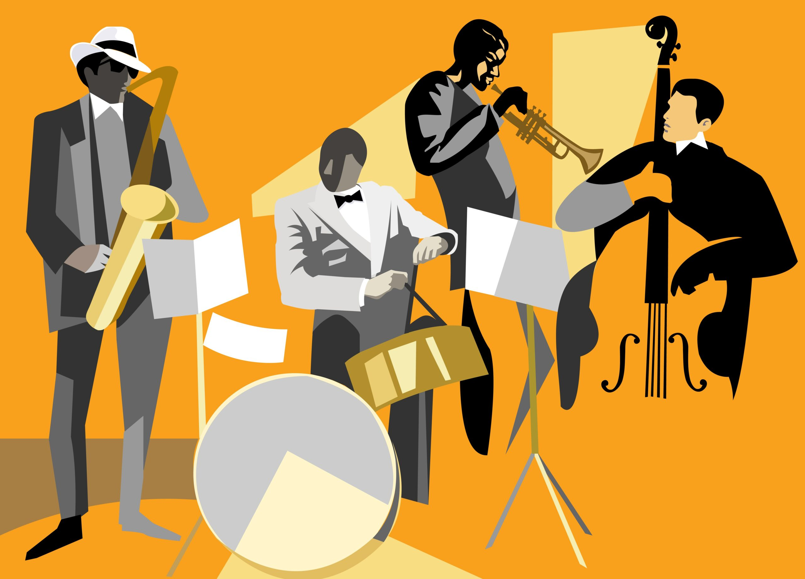
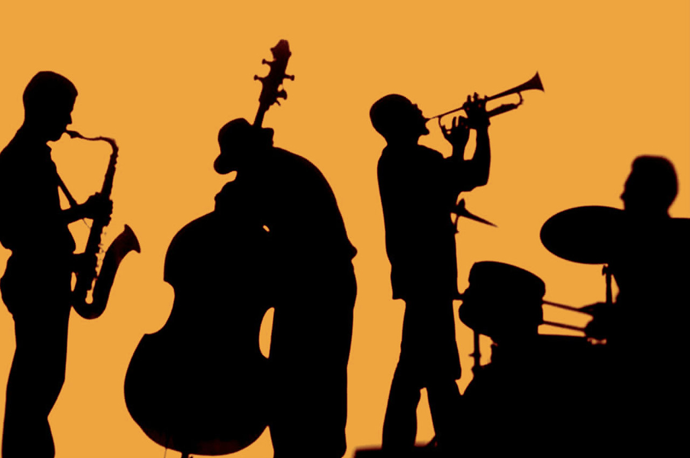

재즈란?
재즈(jazz)는 19세기 말 ~ 20세기 초 미국 뉴올리언스 아프리카계 미국인 사회에서 유래된 음악 장르로 블루스와 래그타임에 뿌리를 둔다.
1920년대 재즈 시대부터 아프리카계 미국인과 유럽계 미국인의 음악적 토대 위에서 결합하고 연결한, 전통음악과 대중음악 사이에서 발전한
음악의 한 형태이다. 재즈는 스윙-블루 노트, 콜-응답 보컬, 폴리리듬, 즉흥 연주 등이 특징이다. 재즈는 서아프리카의 문화와 음악적 표현,
그리고 아프리카계 미국인 음악 전통을 잇는다.

재즈가 전 세계로 퍼지며 국가와 지역, 지역 음악 문화를 끌어들였고, 이로 다양한 음악 유형이 생겼다. 뉴올리언스 재즈는 1910년대 초반에 시작했고,
이전의 브라스 밴드 행진곡, 프랑스식 사중주, 이중주, 래그타임, 블루스와 함께 집단적인 즉흥 연주를 결합하였다.
1930년대에는 춤 중심의 대형 밴드 음악을 편곡하였다. 하드스윙, 블루스, 즉흥적인 스타일인 캔자스 시티 재즈와 집시 재즈(musette waltzes를 강조한 스타일)가
두드러진 스타일이었다.

즉흥연주
재즈는 정의하기 어렵지만, 부분적으로는 많은 하위 장르를 포함하므로 즉흥성은 그 정의 요소 중 하나이다.
즉흥연주의 중심은 아프리카계 미국인 노예들의 노동요와 밭농사에서 행한 음악에서 생겨난 민속 음악 형태인 블루스와 같은
초기 아프리카 영향의 음악에서 발전했다. 이 노동요는 보통 반복적인 콜 앤 리액션 패턴을 중심으로 했고, 초기 블루스 또한 즉흥적이었다.
클래식 음악 연주는 재즈와 달리 장식, 반주에 대한 관심이 적으며, 화음과 박자 같은 음악 구조를 높이 평가한다.
고전음악 연주자 목표는 악보를 충실하게 연주하는 것이다. 이와는 대조적으로, 재즈는 즉흥적인 상호작용과 협동이 특징이다.
여성의 역할
여성 재즈 연주자들과 작곡가들은 그 역사를 통해 재즈의 공헌을 해왔다. 베티 카터, 엘라 피츠제럴드, 애들레이드 홀리데이,
빌리 홀리데이, 애비 링컨, 아니타 오데이, 디나 워싱턴, 에델 워터스는 보컬 재능을 인정받았지만, 피아니스트 릴 하딘 암스트롱,
트럼펫 주자 발라이다 스노우, 송라이터 아이린 같은 밴드 리더, 작곡가, 기악가 등은 덜 익숙했다. 여성들은 1920년대 초에 재즈를 통해 악기를
연주하기 시작했고, 피아노에서 특별한 인정을 받았다.
전통과 민족
비밥이 등장한 이후 상업적 지향적이거나 대중음악의 영향을 받는 재즈 형태가 비판을 받아왔다. 브루스 존슨에 따르면, 항상 "상업적인 음악으로서의
재즈와 예술의 형태 사이의 긴장감"이 존재해 왔다. 전통적인 재즈 애호가들은 비밥, 자유 재즈, 재즈 퓨전 등을 타락과 배신의 한 형태로 치부했다.
다른 관점은 재즈가 다양한 음악 스타일을 흡수하고 변형시킬 수 있다는 것이다. 표준의 창조를 피함으로써 재즈는 아방가르드 스타일을 등장시킬 수 있게 한다.